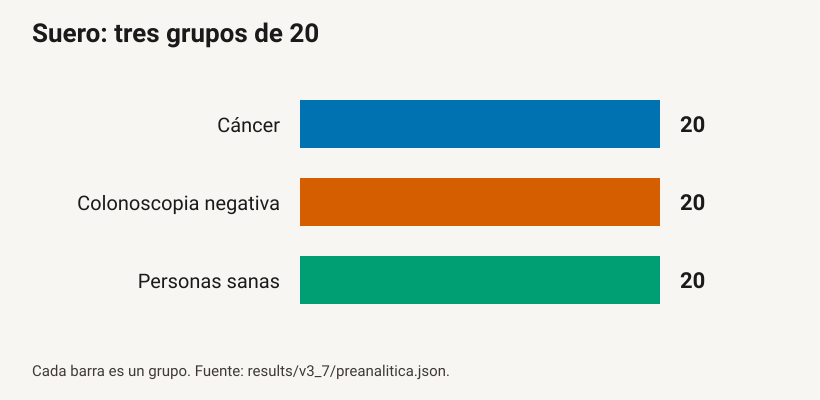
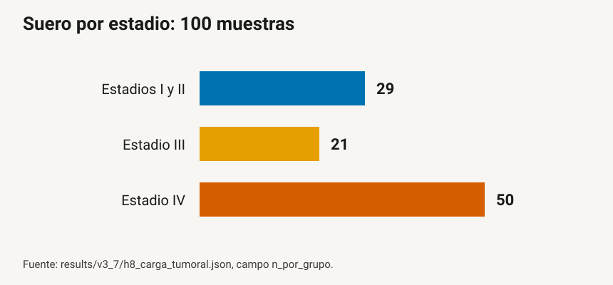
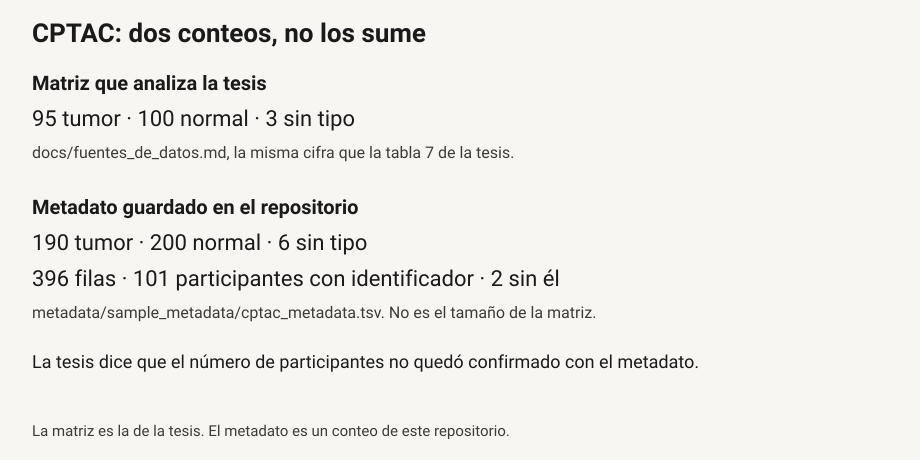

Cuatro cohortes, leídas por separado
Nadie de este trabajo tomó las muestras. Vienen de depósitos públicos. El tamaño que usa la tesis está en la tabla. Las gráficas de suero salen de los JSON de la corrida.
| Acceso | Qué es | Tamaño | Papel |
|---|---|---|---|
| PDC000116 | Tejido CPTAC, TMT. Vasaikar y colaboradores, 2019. | Matriz analizada: 95 tumor, 100 normal, 3 sin tipo. El número de participantes no quedó confirmado. | Ancla del cambio en el tejido. |
| PXD034575 | Tejido, cuantificación sin marcaje. Tanaka y colaboradores, 2024. | 16 pacientes, cada uno con tumor primario, metástasis hepática y mucosa. | Ver si el sentido del cambio se repite. |
| PXD055218 | Suero, DIA, Orbitrap Fusion. Rai y colaboradores, 2025. | 20 con cáncer, 20 con colonoscopia negativa y 20 personas sanas. 60 archivos. | Contraste frente a otra enfermedad intestinal. |
| PXD064655 | Suero o plasma por estadio. Hermoso-Durán y colaboradores, 2026; depósito de McKay, 2026. | 100 muestras: 50 en estadio IV, 21 en III y 29 en I–II. | Lectura por estadio. Quedó sin proteínas tumorales epiteliales suficientes. |
De dónde sale la matriz de CPTAC
La matriz de tejido que lee el flujo no está en git. Se deriva del estudio de acceso abierto PDC000116 (Vasaikar y colaboradores, 2019) y se redistribuye con atribución en el conjunto de datos 10.5281/zenodo.24398807 (zenodo.org/records/24398807, licencia CC-BY-4.0). make descargar la deja en data/raw/cptac/cptac_crc_matrix.tsv y comprueba el SHA-256. El mismo depósito trae los tres archivos certificados de la corrida v1 y los embeddings ESM-2. Hay que citar el artículo original además de ese DOI.



Otras fuentes, que no son cohortes
Para anotar proteínas se usan Gene Ontology, UniProt, el Human Protein Atlas y la biblioteca de contaminantes de Frankenfield y colaboradores (2022). Esas citas están en Referencias. Las huellas de los archivos están en el repositorio, en data/checksums.sha256.